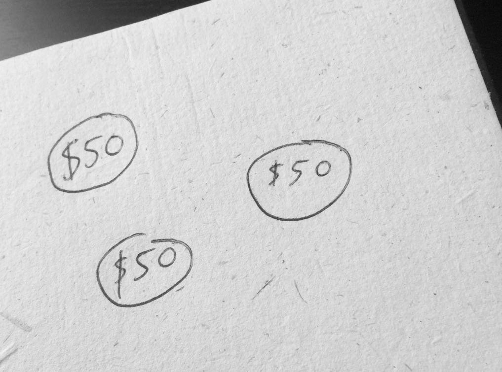

Now that your Cashbook has been empowered, you need to learn the basic ritual for using it. Here’s exactly what you do during the Attraction Ritual.
1. Perform this Attraction Ritual once a day, at any time of day. If you miss a day, it’s not the end of the world, but aim for eleven consecutive days. This shows commitment. If you demonstrate commitment, so will Nitika. If you don’t find the time, why should Nitika bother? If the money turns up before the eleven days are over, you can end the ritual, of course.
2. Sit in a quiet place where you won’t be disturbed. Open your book and vibrate the words NAH-KAH EE-AH-OH-EH over and over until you feel a sense of calm come over you. If you feel nothing, don’t worry, just stay relaxed and move onto the next step.
3. Close the book and gaze at the sigil of Nitika on the cover. Think of the amount of money you want to create. Most importantly, think about what you’ll do with this money. (See the next chapter for precise details on this point.) When you’ve got the feeling of the money you want to attract, vibrate the name Nitika three times while looking at the sigil.
4. Open the book and vibrate NAH-KAH EE-AH-OH-EH one more time, and then read out the first part of the invocation, starting with, ‘Nitika. Nitika. Nitika. In the name…’ using the pronunciations that you have learned.
When you get to the small circle that you drew, stop.
5. Turn to the next blank page in your book and write the amount you want to attract. In this example, it is $50, but you should choose an amount that’s right for you. Write $50 and put a circle around it. Use this same page each day, adding another circle each time you perform the ritual. (If you use a different currency, write down that currency.) After three days, it would look something like this:

6. Now turn back to the first page and read everything that follows the small circle, starting with, ‘I command thee…’
7. When you have finished reading, close the book, put it away and do something else.
8. Remember what was said about lust for result. It’s almost impossible to stop thinking about your ritual, but it helps if you do something involving, such as making and eating food, going out, singing, calling somebody, or anything that involves physical exercise. If you find yourself dwelling on the ritual, remember to feel grateful for the result.
That’s it. Repeat each day. It might take a day or two for results to show up. It might take eleven days. It might take longer, but the money will turn up. It may turn up in a highly unexpected way. The more patient and relaxed you are, the more likely it is that the money will come.
Don’t wait for it or look for it, but be glad when it does arrive. If it doesn’t arrive when you want it to, don’t write the ritual off as a failure. Know that it may yet manifest. When the eleven days are over, you can start a new ritual for a different amount.
When you do see the money turn up, know that the magick has worked (even if it’s not the exact amount you asked for). Go back to your Cashbook, turn to the page where you wrote the amount of money you were seeking, and draw a cross through each circle where you wrote the amount. As you do so, feel gratitude. When you feel gratitude, you are paying the spirit back with your emotions, and that makes for good future relations.
If nothing seems to have happened after eleven days, cross everything out on the money page, feeling grateful for your result (as though it really has happened) and start a fresh page as soon as you’re ready. Starting a new ritual can help you to forget about the previous one, which opens the doorway to success.